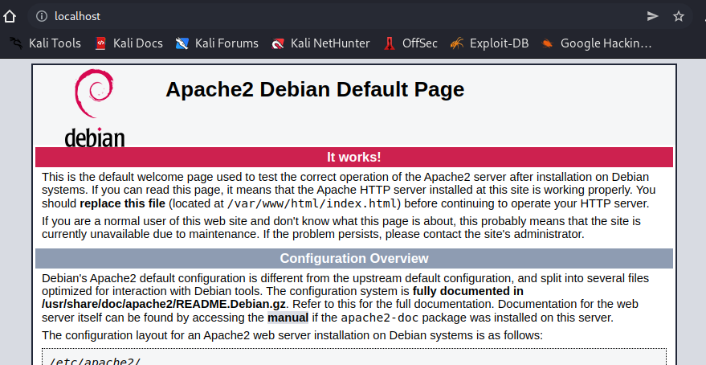
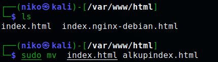
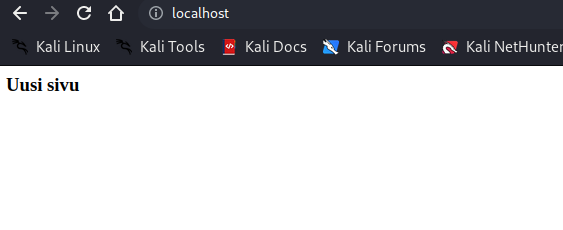

H2e
Default pagen muuttaminen
Tehävänäni oli vaihtaa Apachen default page toiseen.Lähtötilanne näytti seuraavalta:
Tallensin alkuperäisen indexi.html uudelleen ja nimesin sen alkupindex.html komennolla mv index.html alkupindx.html.
Tämän jälkeen loin uuden index.html tiedoston microlla ja käynnistin Apache2 palvelun uudestaan komennolla service apache2 restart
Uudelleen käynnistyksen jälkeen default page näytti tältä:
